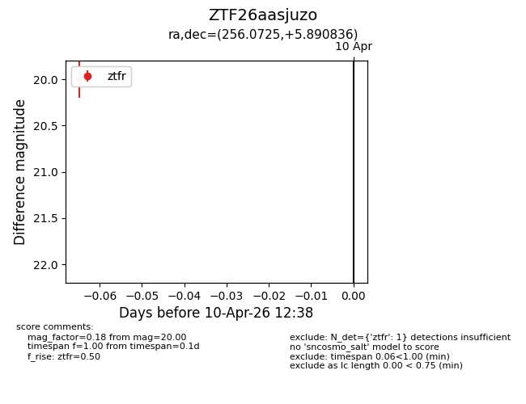
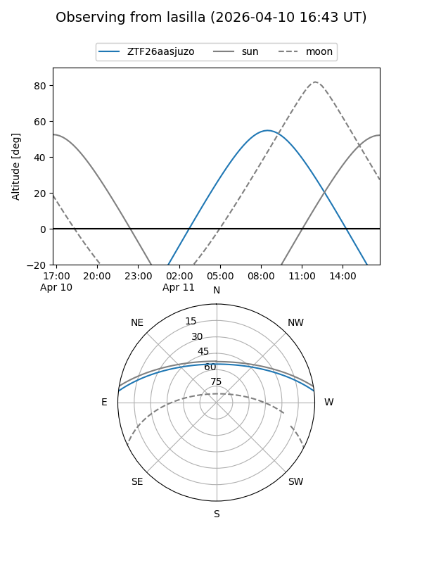
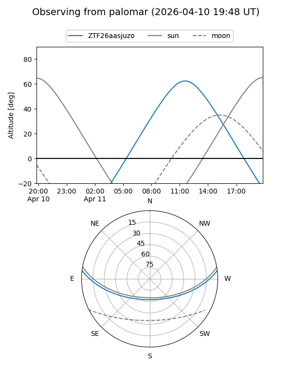

ZTF26aasjuzo
Target ZTF26aasjuzo at 2026-04-10 12:49
Aliases and brokers:
FINK: link
Lasair: link
ALeRCE: link
alt names
ZTF26aasjuzo (ztf,fink_ztf)
Coordinates:
equatorial (ra, dec) = 256.0725,+5.89084
equatorial (HMS+DMS) = 17:04:17.41,+05:53:27.01
galactic (l, b) = (25.6751,+26.47298)
Flags:
Photometry:
last ztfr=20.00
1 ztfr detections
Lightcurve

Visibility


Additional plots